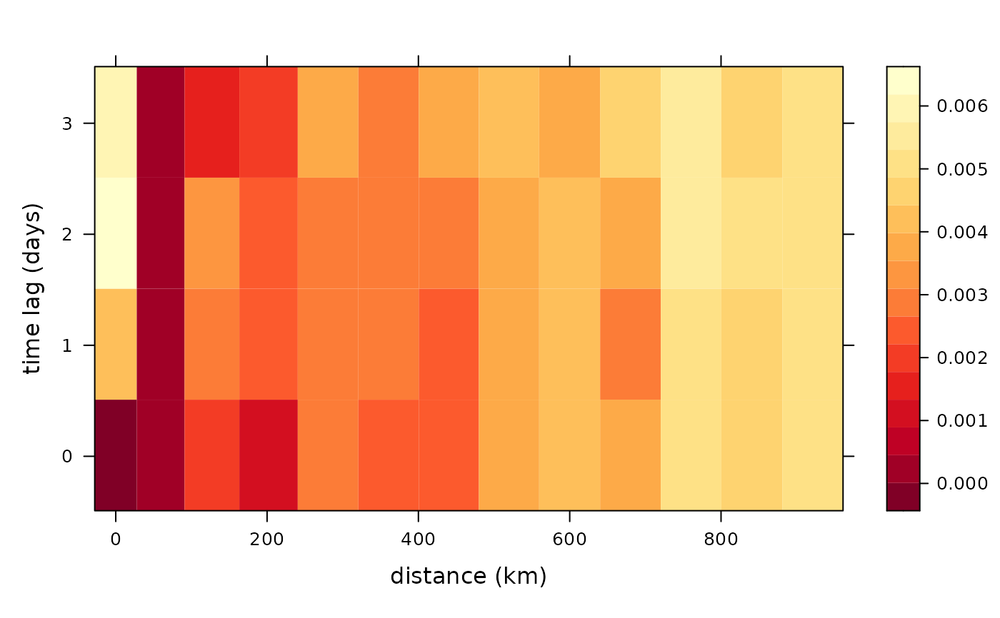
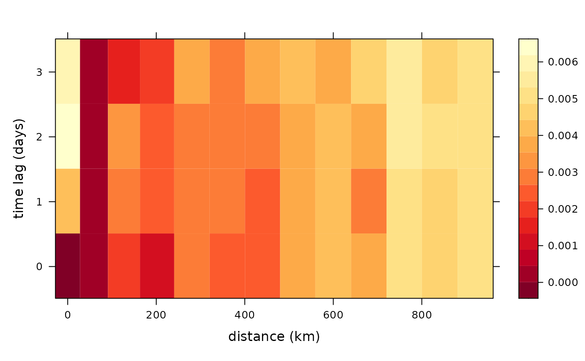

Computes the semi-variogram using a dataframe or a stars object.
semivariogram.RdComputes the semi-variogram from a stars or a dataframe. Input arguments differ for each case. Function autoplot can plot the output.
When the input is a dataframe, the locations, time and the quantity of interest needs to be given. When the input is a stars object, a 3 dimensional stars object needs to be given as input with the first 2 dimensions being spatial and the third being time.
Usage
semivariogram(
x,
latitude_linear = TRUE,
longitude_linear = TRUE,
missing_value = -9999,
width = 80,
cutoff = 1000,
tlagmax = 6,
...
)
# S3 method for data.frame
semivariogram(
x,
latitude_linear = TRUE,
longitude_linear = TRUE,
missing_value = -9999,
width = 80,
cutoff = 1000,
tlagmax = 6,
times_df,
values_df,
...
)
# S3 method for stars
semivariogram(
x,
latitude_linear = TRUE,
longitude_linear = TRUE,
missing_value = -9999,
width = 80,
cutoff = 1000,
tlagmax = 6,
...
)
# S3 method for semivariogramobj
autoplot(object, ...)Arguments
- x
The dataframe or stars object. If it is a dataframe, then it should have the locations.
- latitude_linear
If
TRUEa linear model is fitted with latitude as a covariate is fitted.- longitude_linear
If
TRUEa linear model is fitted with longitude as a covariate is fitted.- missing_value
If a certain value such as -9999 denotes the missing values for given locations and times.
- width
A parameter to the
gstat::variogramfunction. The width of the distance intervals to be considered.- cutoff
A parameter to the
gstat::variogramfunction. The spatial separation distance.- tlagmax
A parameter to the
gstat::variogramfunction. The maximum time lag.- ...
Other arguments that need to be used for datafames or currently ignored.
- times_df
For dataframes: the dataframe containing the dates in
Dateformat.- values_df
For dataframes: the dataframe of dimension
length(times) x length(locations)containing the quantity of interest.- object
For autoplot: the output from the semivariogram function.
Examples
# Dataframe example
library(dplyr)
data(locs)
data(Times)
data(Tmax)
temp_part <- with(Times, paste(year, month, day, sep = "-"))
temp_part <- data.frame(date = as.Date(temp_part)[913:923])
Tmax <- Tmax[913:923, ]
semidf <- semivariogram(locs,
temp_part,
Tmax,
latitude_linear = FALSE,
longitude_linear = FALSE,
missing_value = -9999,
width = 50,
cutoff = 1000,
tlagmax = 7
)
#> The legacy packages maptools, rgdal, and rgeos, underpinning the sp package,
#> which was just loaded, will retire in October 2023.
#> Please refer to R-spatial evolution reports for details, especially
#> https://r-spatial.org/r/2023/05/15/evolution4.html.
#> It may be desirable to make the sf package available;
#> package maintainers should consider adding sf to Suggests:.
#> The sp package is now running under evolution status 2
#> (status 2 uses the sf package in place of rgdal)
autoplot(semidf)
 # Stars example
library(stars)
# Create a stars object from a data frame
precip_df <- NOAA_df_1990[NOAA_df_1990$proc == 'Precip', ] %>%
filter(date >= "1992-02-01" & date <= "1992-02-05")
precip <- precip_df[ ,c('lat', 'lon', 'date', 'z')]
st_precip <- st_as_stars(precip, dims = c("lon", "lat", "date"))
semist <- semivariogram(st_precip)
autoplot(semist)

# Stars example
library(stars)
# Create a stars object from a data frame
precip_df <- NOAA_df_1990[NOAA_df_1990$proc == 'Precip', ] %>%
filter(date >= "1992-02-01" & date <= "1992-02-05")
precip <- precip_df[ ,c('lat', 'lon', 'date', 'z')]
st_precip <- st_as_stars(precip, dims = c("lon", "lat", "date"))
semist <- semivariogram(st_precip)
autoplot(semist)
